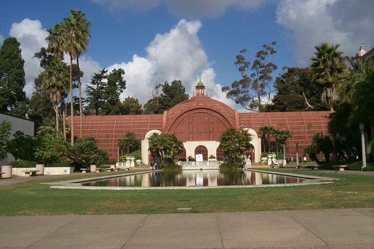
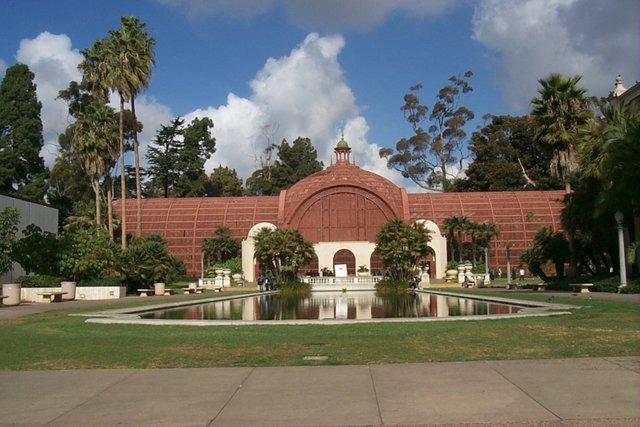

Speaker: Jishen Zhao, UC San Diego
Title: Memory System Hardware/Software Co-design for Scalable and Energy-efficient Neural Network Acceleration
Abstract: Neural networks (NNs) have been adopted in a wide range of application domains, such as image classification, speech recognition, object detection, and computer vision. However, accelerating NNs – especially deep neural networks (DNNs) – can be energy and time consuming, because of frequent data movement between processor and memory. Furthermore, DNNs typically involve massive fine-grained operations with various computation and memory access characteristics. Exploiting high parallelism with such diverse operations is challenging. In this talk, I will describe our effort on a software/hardware memory system co-design to achieve scalable and energy efficient NN acceleration. I will start from exploring hardware and runtime system co-design to exploit heterogeneous processing-in-memory for accelerating DNN training. Then, I will elaborate on scalable and flexible memory fabric design to support large-scale DNN models. Finally, I will show our study on secure memory design for DNN attestation.
Bio: Jishen Zhao is an Assistant Professor in the Computer Science and Engineering Department at University of California, San Diego. Her research spans and stretches the boundary between computer architecture and system software, with a particular emphasis on memory systems, domain-specific acceleration, and system reliability. Her research is driven by both emerging technologies (e.g., nonvolatile memories, 3D-stacked memory) and modern applications (e.g., smart home and autonomous vehicles, deep learning, and big-data analytics). Before joining UCSD, she was an Assistant Professor at UC Santa Cruz, and a research scientist at HP Labs before joining UCSC. She is a recipient of NSF CAREER award in 2017.
Speaker: David Kaeli, Northeastern University
Title: The Path to Multi-GPU Computing
Abstract: Today, compute GPUs have become a primary enabler for accelerating a wide range of workloads ranging from medical imaging to cryptoanalysis, and from molecular dynamics to deep learning. This talk will begin by revisiting how GPUs transformed from serving as a graphics device and quickly became mainstream accelerators. Then this talk will fast forward to where we are today, faced with applications that can easily exhaust the resources of a single GPU, requiring us to find better ways to effectively exploit the resources of multiple GPUs.
Bio: David Kaeli is a College of Engineering Distinguished Professor of Electrical and Computer Engineering at Northeastern University, where he directs the Northeastern University Computer Architecture Research Laboratory (NUCAR). He received a BS and PhD in Electrical Engineering from Rutgers University, and an MS in Computer Engineering from Syracuse University. Prior to joining Northeastern in 1993, Kaeli spent 12 years at IBM, the last 7 at T.J. Watson Research Center, Yorktown Heights, NY. He has been a visiting faculty fellow at the University of Edinburgh, University of Ghent, Technical University of Munich and Barcelona Tech. His current research topics include hardware security, graphics processors, virtualization, heterogeneous computing, and multi-layer reliability. He is an IEEE Fellow and a Distinguished Scientist of the ACM.

 
